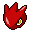
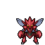
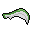
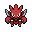

Pokédex / #212

Scizor #212
BugSteel
Its wings are not used for flying. They are flapped at high speed to adjust its body temperature.
Generation 2 · Johto

Stats
| Attack | 130 | |
|---|---|---|
| Defense | 100 | |
| Sp. Atk | 55 | |
| Sp. Def | 80 |
In the wild
| Wild level | 85–95 |
|---|---|
| HP | 70 |
| Experience | 15 |
| Egg groups | Bug |
Evolution
- Evolves from Scyther at level 60, with a Metal Coat.
Moves
| Level | Move | Type | Category | Power | Energy | Cooldown | Effect | |
|---|---|---|---|---|---|---|---|---|
| 1 | Tackle | Normal | Physical | 15 | 15 | 1s | Tackle is one of the most common and basic moves a Pokemon learns. It deals damage with no additional effects. | |
| 5 | Quick Attack | Normal | Physical | 40 | 40 | 6s | Quick Attack deals damage and has no secondary effect. | |
| 10 | Focus Energy | Normal | Status | – | 70 | 60s | Increases Critical-Hit ratio by 50%. | |
| 15 | Bug Buzz | Bug | Special | 90 | 100 | 21s | Bug Buzz deals damage and has a 10% chance of lowering the target's Special Defense by one stage. | |
| 20 | Bullet Punch | Steel | Physical | 40 | 50 | 9s | Bullet Punch deals damage. | |
| 25 | Agility | Normal | Status | – | 80 | 20s | Agility raises the user's Speed by two stages. | |
| 30 | Metal Claw | Steel | Physical | 50 | 50 | 8s | Metal Claw deals damage and has a 10% chance of raising the user's Attack by one stage. | |
| 35 | Razor Wind | Normal | Special | 80 | 80 | 15s | The user of Razor Wind will 'whip up a whirlwind' on the first turn. On the second turn, Razor Wind deals damage and has an increased critical hit ratio. | |
| 40 | Night Slash | Dark | Physical | 70 | 70 | 11s | Night Slash deals damage and has an increased critical hit ratio. | |
| 45 | X-Scissor | Bug | Physical | 80 | 90 | 18s | X-Scissor deals damage and has no secondary effect. | |
| 50 | Double Team | Normal | Status | – | 150 | 90s | Double Team increases the user's speed into maximum, creating illusions. | |
| 55 | Air Slash | Flying | Special | 75 | 80 | 17s | Air Slash deals damage and has a 30% chance of causing the target to flinch. | |
| 65 | Swords Dance | Normal | Status | – | 100 | 60s | Swords Dance raises the user's Attack by two stages. | |
| 70 | Iron Head | Steel | Physical | 80 | 80 | 12s | Iron Head inflicts damage and has a 30% chance of causing the target to flinch. |
Field abilities
StrengthCutRock SmashHeadbutt
Special abilities
SwarmTechnician
Egg moves
Baton PassBug BuzzCounterDefogEndureNight SlashQuick GuardRazor WindReversalSilver WindSteel Wing
Technical machines
Aerial AceBideBrick BreakDouble EdgeDouble TeamFury CutterHeadbuttHyper BeamLight ScreenMimicRageRain DanceRestSafeguardSandstormSoftboiledSteel WingSubstituteSwiftSwords DanceToxic
Drops
| Item | Amount | Chance | |
|---|---|---|---|
| bunch of sugar cane | 1–3 | 85.7% | |
| pot of moss mug | 1 | 61.2% | |
| piece of royal steel | 1 | 42.9% | |
| metal spike | 1 | 33% | |
| huge chunk of crude iron | 1 | 24.5% | |
| sample of sand wasp honey | 1 | 21.4% | |
 | scyther razor | 1 | 8.57% |
| Metal Coat | 1 | 0.2% | |
 | scizor doll | 1 | 0.1% |
| Insect Plate | 1 | 0.05% | |
| Iron Plate | 1 | 0.05% | |
| held metal coat | 1 | 0.01% | |
| held silver powder | 1 | 0.01% |